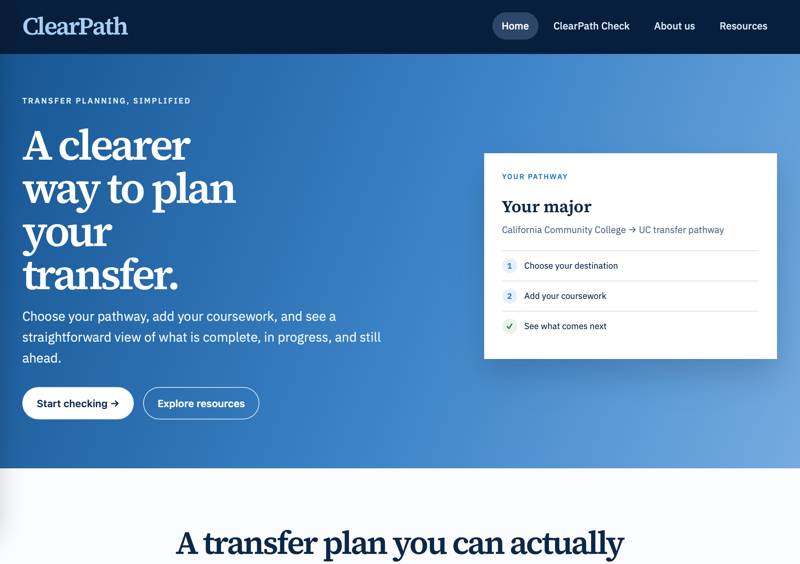
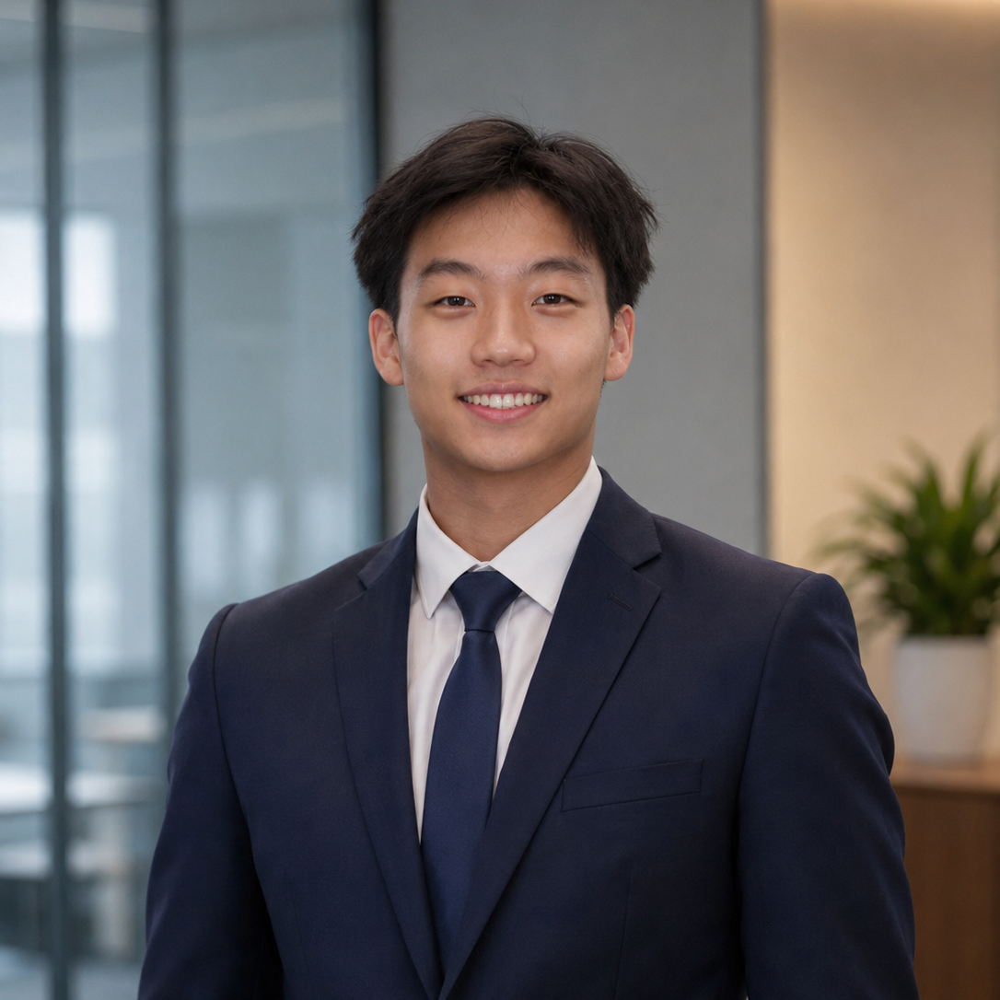
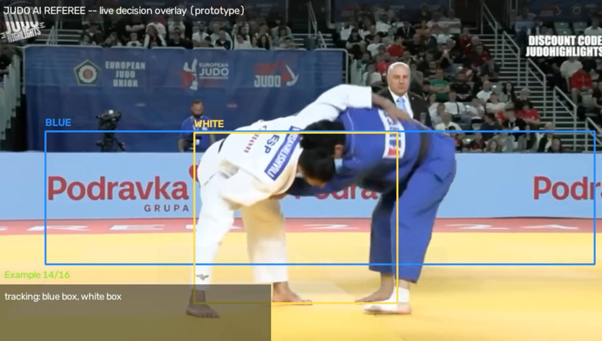
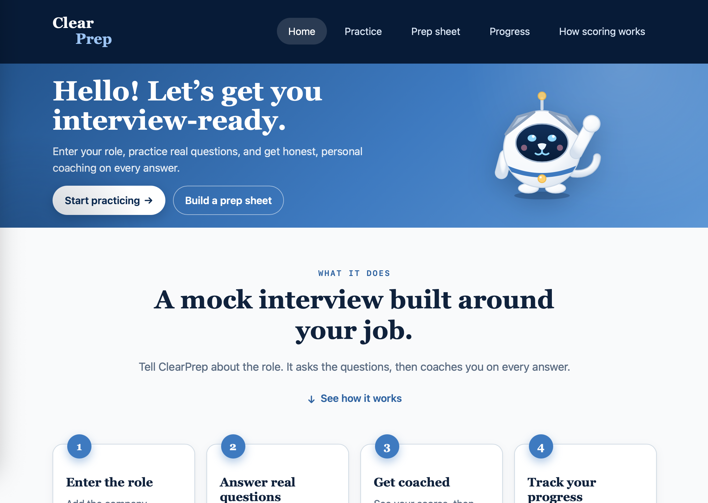
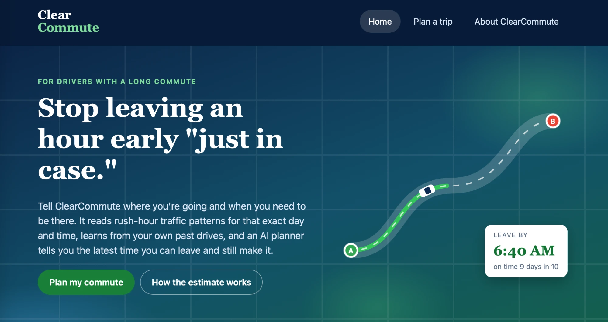

01
Featured Project
ClearPath
An independent, student-built tool for checking transfer coursework against a specific community college-to-university pathway.
Visit live project
Computer Science Student · Aspiring AI / ML Engineer

Based in Arcadia, CA
01 / About
02 / Selected Projects
Featured Project
An independent, student-built tool for checking transfer coursework against a specific community college-to-university pathway.
Visit live project
Backend / In progress
A computer-vision app in progress that detects judo throws and officiates accordingly, with a confidence score attached to every call.
Watch sample
Featured Project
An AI-supported mock-interview tool that creates job-specific practice questions, provides transparent feedback, and helps students prepare with confidence.
Visit live project
Featured Project
An AI-powered commute planner for long-distance drivers. It reads rush-hour traffic patterns and your own past trips to tell you the latest time you can leave and still arrive on time.
View source
03 / Experience & education
2020 — 2022
Hand-fabricated custom Mini 4WD components and optimized gear ratios and drivetrains for changing track conditions.
2022 — 2026
Built a STEM foundation through AP Computer Science Principles, Physics, Chemistry, and Biology.
Sep 2022 — Jul 2024
Co-founded Arcadia’s GenAI Club to help students explore generative AI, emerging technology, and responsible innovation through discussions and learning activities.
Summer 2024
Provided one-on-one science tutoring to underserved students while supporting a collaborative, student-centered learning community.
2024 — 2026
Led civil-engineering design projects, coordinating team work, project goals, testing, and deadlines.
2024 — 2026
Guided elementary students through hands-on STEM workshops, LEGO builds, robotics, and introductory coding activities.
2025 — Present
Developing confidence, communication, teamwork, and foundational skills for youth athletes.
2026 — Present
Building a foundation in computer science, applied mathematics, and analytical problem solving.
Sep 2026 — Dec 2026
Currently building foundations in algorithms, coding languages, data structures, and programming.
04 / Technical skills
Python, Java, JavaScript, C++, HTML, and Scratch
Algorithms, data structures, computational thinking, and programming fundamentals
Engineering design, prototyping, testing, problem-solving, and robotics
CNC machining, lathe and mill operation, Dremel work, and jig and saw projects
Youth mentorship, science tutoring, clear communication, and project planning